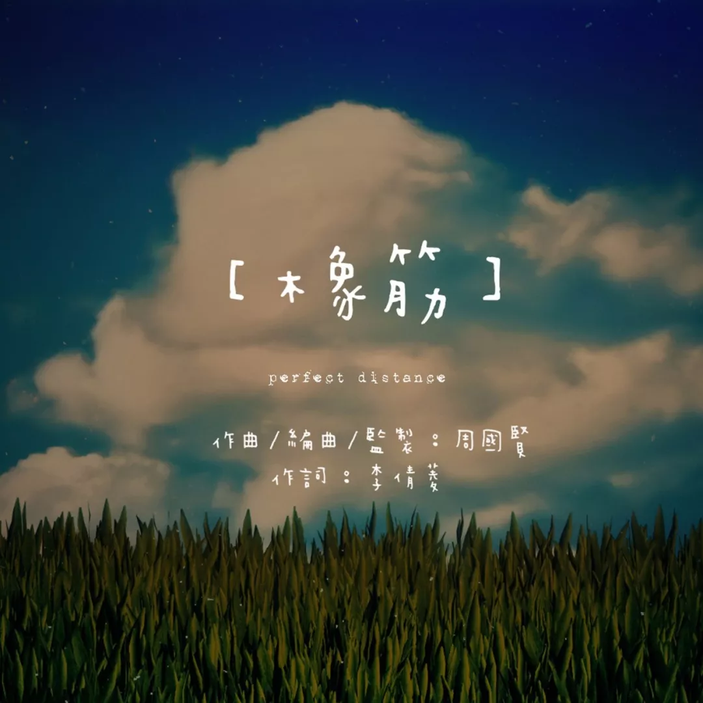

今天想说的是，周国贤的新歌《橡筋》反映的一种爱情经历。
这首歌以橡筋作比喻，从男方的角度出发，犹如橡筋一般被操控，花尽心机却换来忽冷忽热的对待，但又没办法离开这个人的痛苦感受。
最好的一段感情关系，莫过于双方的平等。
如果失去了平衡，无论你是一位观音兵和后备，又或是一位不断付出但得不到回报的伴侣，都会感觉到相处的疲累。
爱情里面，卑微的一方是水造的，失去自我，随传随到，生活完全听命于对方，依然乐此不疲。
我们可能把自己的位置放得特别低，以至于对方给自己一句不经意的夸奖，一次不经意的微笑，自己都感觉如沐春风，再一次死心塌地为对方付出，爱得特别卑微，又卑微得特别快乐。
“今晚你做的咖喱鸡真的好好吃哦，你厨艺怎么那么好啊！”
心里面的小本本默默记下对方喜欢吃自己做的菜，然后在家反复练习，精益求精，想下次给对方更多惊喜。
某天凌晨三点，电话响起，电话那边传来一段哭声：“今晚好大雨，我好怕，根本没办法睡觉，你可以来陪我吗？”
明明知道自己明天上早班，明明自己已经睏得不行，还是赶紧换好衣服出门去找对方。
久而久之，对方的冷漠开始让你怀疑自己的付出，意识到自己被控制。
有一句说话是这么说的，爱情里面最蠢的就是做尽了自我感动的事。
这时想转身离开，却发现原来自己太喜欢对方，已经习惯于这种被使唤，被接受，甚至是被奴役的感觉。
与斯德哥尔摩症候群不一样的是，被虐者是从害怕死亡而感受到对方的怜悯，卑微的人则是害怕失去，失去了被虐待的资格。
有时候自己一个人发呆，可能会想，要是从来没有遇上这个人多好。
人的感情总是没办法自主控制，遇上谁，爱上谁，是上天安排，是意识主宰，可能遇上这个拉橡筋的人就是命中注定。
但绷紧的橡筋总有放松的一日，不断一拉一松的橡筋总有断掉的一日，或者真的要到那一天，才有办法令自己死心吧。
℗维高文化
曲：周国贤
词：李倩菱
编：周国贤
监：周国贤